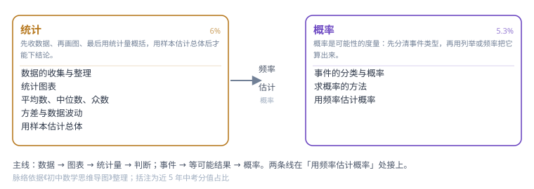

第 3 领域 · 统计概率
用数据说话，用可能性判断：收数据 → 画图 → 算统计量 → 估概率。（中考约 11.3% 分值）

这张图是这一领域的知识骨架：从左到右是学习顺序，每个方框是一个主题，方框下面的小字是主题内的知识点。照着它走，不会出现「做这道题要用到还没学的工具」的情况。
先收数据、再画图、最后用统计量概括，用样本估计总体后才能下结论。（约 6%）
概率是可能性的度量：先分清事件类型，再用列举或频率把它算出来。（约 5.3%）
输入关键词，回车打开第一条